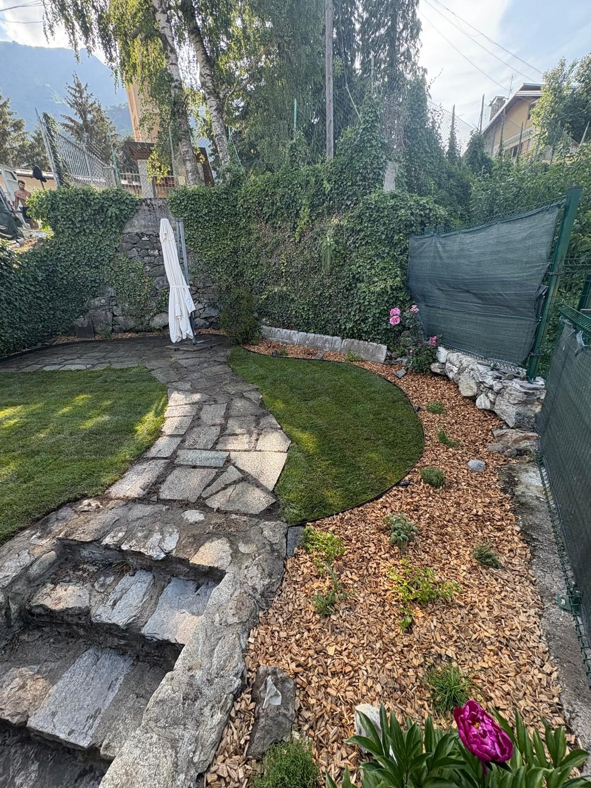

Il tuo giardino,curato davvero.
Manutenzione, potatura, irrigazione e realizzazione giardini.
Lavoro artigianale, diretto e su misura.
Tutto per il tuo spazio verde.
Dalla manutenzione alla creazione completa, ogni intervento su misura per il tuo giardino.
Manutenzione del verde
Interventi ordinari e straordinari per mantenere il tuo giardino curato in ogni stagione dell'anno.
Cura piante e siepi
Potatura professionale, sfalcio e cura delle siepi per dare forma e salute alle tue piante.
Sistemi di irrigazione
Progettazione, installazione e manutenzione di impianti di irrigazione su misura.
Realizzazione aree verdi
Nuovi prati con semina o rotoli, aiuole fiorite e progettazione di spazi verdi completi.
Prima e dopo.
Trascina il cursore per scoprire la trasformazione.
Immagina il tuo spazio trasformato così.
Richiedi un preventivo gratuito
Il tuo giardiniere,
non un call center.
Lisa Garden è la ditta individuale di Andrea Lisa, con sede a Vignolo (CN). Ogni progetto è seguito direttamente dal titolare, dalla prima visita alla consegna.
Niente intermediari, niente sorprese. Un unico referente che conosce il territorio, le sue piante e le sue stagioni.
- Gestione diretta e personale di ogni progetto
- Contatto artigianale, preventivi su misura
- Operativi a Vignolo, Borgo San Dalmazzo, Cuneo e Boves

Raccontaci il tuo progetto.
Rispondi a qualche domanda e ti contatteremo con un preventivo su misura.
Passo 1 di 4
Di cosa hai bisogno?
Quanto è grande lo spazio?
Dove si trova il giardino?
Seleziona un'opzione per continuare.

Galleria progetti.
Una selezione dei giardini che abbiamo curato e trasformato.